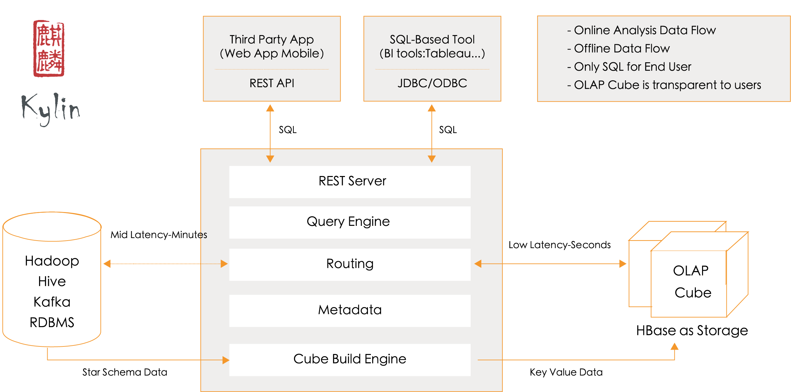

Apache Kylin是一个开源的分布式OLAP引擎，提供基于Hadoop/Spark之上的SQL查询接口以及多维分析能力，支持超大规模的数据集，能够在亚秒内查询巨大的Hive表。Apache Kylin最初由eBay开发并贡献至开源社区。

出于学习和研究的目的，建议使用集成的sandbox来安装Apache Kylin，避免在Hadoop环境上浪费时间。这里选择了CDH的sandbox环境。
下载好CDH sandbox并导入Virtual Box之后，启动虚拟机即可得到一个配置好的HDFS、YARN、MapReduce、Hive、Hbase、Zookeeper等软件的运行环境。
从官网下载Kyelin二进制安装包:
cd /usr/local |
解压tar包，并配置环境变量KYLIN_HOME:
tar -zxvf apache-kylin-2.4.0-bin-cdh57.tar.gz |
为确保用户有权限执行hadoop、hive和hbase的相关命令，可以运行$KYLIN_HOME/bin/check-env.sh命令检查环境配置，如果没有error信息，意味着环境没有问题。
运行 $KYLIN_HOME/bin/kylin.sh start 脚本来启动 Kylin ，服务器启动后，可以通过查看 $KYLIN_HOME/logs/kylin.log 获得运行时日志。
Kylin 启动后可以通过浏览器 http://hostname:7070/kylin 查看。初始用户名和密码是 ADMIN/KYLIN。
运行 $KYLIN_HOME/bin/kylin.sh stop 脚本，停止 Kylin。